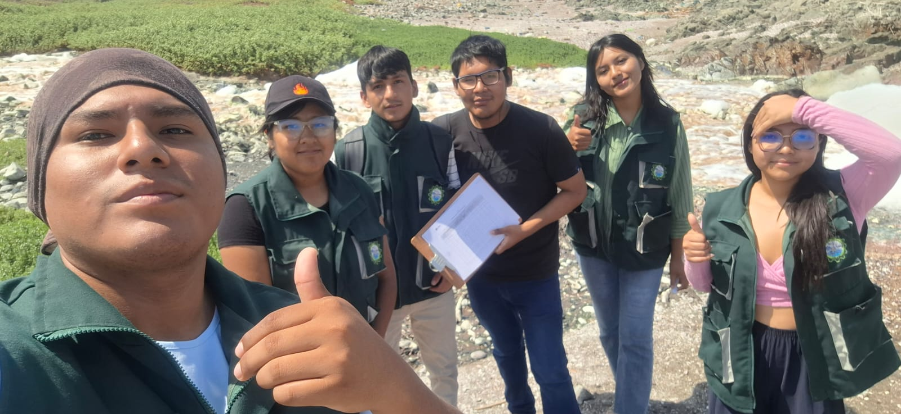

ARCHIVADOR DE LEYES - AGUA

Esta página pertenece al curso de Contaminación y Control de Aguas de la Universidad Nacional de Moquegua. Fue creada con el objetivo de proporcionar acceso fácil y organizado a las leyes relacionadas con la gestión del agua en el Perú.

Micaela Valentina Ramirez Vizcarra
Melany Andrea Pachacute Nina
Carlos Daniel Gutiérrez Quispe
Wilian Humberto Vargas Farfán
Erick Paul Atiquipa Mamani
Pierina Cialey Quispe Estaca